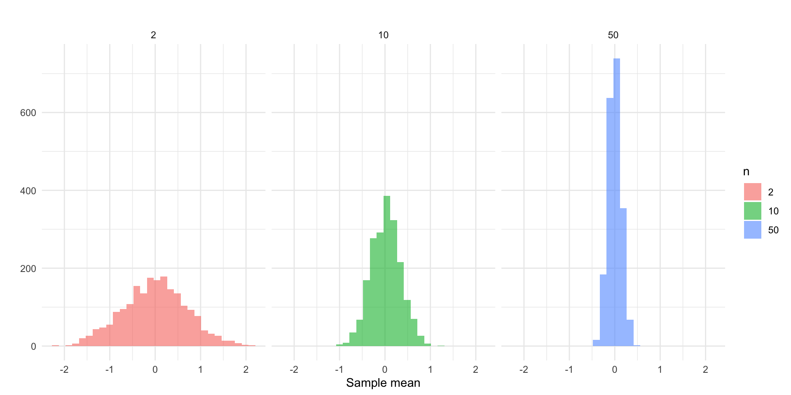
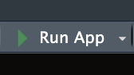

Dynamic Visualization: Introduction to Shiny
Motivating question: In statistics, you learned that when we sample, we want large sample sizes. Why?
Let’s see this in practice. If we drew \(k = 2000\) random samples of size \(n = 2\), \(n = 10\), and \(n = 50\), respectively, we would get three sampling distributions. We could then visualize each sampling distribution with a ggplot2:
Take a look at each plot. What is the visualization showing you? By displaying this information visually, what do you learn?
Now, take a look at a different way of using a visualization to convey this point: visualization of sampling distributions.
Static vs. Dynamic Visualization
The visualizations above are examples of static and dynamic visualizations, respectively. What makes the latter visualization dynamic is that the user can alter the inputs to change what the visualization shows. It is not simply fixed by the author/developer/etc, it is interactive: the user is able to alter what is rendered.
Other examples…
What if you were interested in:
- identifying an optimal strategy for network disruption (check out this network disruption app)
- the spatial distribution of crime in Phoenix (check out this Phoenix Crime Dashboard)
These are all built using Shiny!
What is Shiny and How it Works
Shiny is an R framework for building interactive web applications directly from R code. It allows you to take static analyses and visualizations, like a ggplot2, and turn them into user-driven applications that run in a web browser.
With Shiny, users can:
- Adjust inputs (sliders, dropdowns, buttons)
- Filter data
- Change model parameters
- Instantly see updated visualizations and results
Core Concepts
Shiny apps are built around three simple ideas:
The UI (User Interface), which is what the user sees. It includes the layout of the page, input controls (sliders, dropdowns, checkboxes), and output placeholders (where plots, tables, or text will appear). The UI defines the structure of the app.
The Server, this is what happens behind the scenes. It is where we put the instructions for what is produced in the UI, where data is processed, and where calculations happen. The server connects user inputs to outputs.
Reactivity is what makes Shiny dynamic (and powerful). Reactivity means that code reruns automatically when inputs change. Think of it like Excel cell recalculation: If one cell changes, any dependent cells update automatically. Shiny works the same way in that changes to the inputs trigger update which refresh the output.
Let’s go back to the visualization of sampling distributions app and take a closer look. Now, take a closer look “under the hood” to see what it looks like here.
An Example
Static Visualization
Suppose we created a plot using this code:
library( ggplot2 )
n <- 100
x <- rnorm( n )
ggplot(data.frame(x = x), aes(x = x)) +
geom_histogram(bins = 30, fill = "steelblue", alpha = 0.7) +
labs(title = paste("Histogram of", n, "random normals"),
x = "value", y = "count") +
theme_minimal()We have a very simple plot of random draws from a standard normal distribution. What if we wanted to increase the number we took? Decrease it?
Dynamic Visualization
Let’s create a very simple Shiny app. As we do this, ask yourself: What is part of the UI? What is part of the server? Where is reactivity happening?
To get started, install shiny using install.packages( "shiny" ). Then, create a new R script file and add this code to it:
library( shiny )
library( ggplot2 )
ui <- fluidPage(
titlePanel("Interactive Histogram"),
sidebarLayout(
sidebarPanel(
sliderInput("n", "Sample size (n):", min = 10, max = 1000, value = 100, step = 10)
),
mainPanel(
plotOutput("hist")
)
)
)
server <- function(input, output) {
output$hist <- renderPlot({
x <- rnorm(input$n)
ggplot(data.frame(x = x), aes(x = x)) +
geom_histogram(bins = 30, fill = "steelblue", alpha = 0.7) +
labs(title = paste("Histogram of", input$n, "random normals"),
x = "value", y = "count") +
theme_minimal()
})
}
shinyApp(ui = ui, server = server)Now, look to the top right corner of the screen and you will see a button called “Run App” that looks like this:

Click that button and watch the magic happen!
Ok, you just created your first Shiny app! I knew you had it in you. Let’s walk through what we did.
The first part loads the libraries to get the functions needed to build the app and the plot:
Next, we have our two key pieces, the ui and the server. Let’s look at the code for defining the user interface:
ui <- fluidPage(
titlePanel("Interactive Histogram"),
sidebarLayout(
sidebarPanel(
sliderInput("n", "Sample size (n):", min = 10, max = 1000, value = 100, step = 10)
),
mainPanel(
plotOutput("hist")
)
)
)We are first defining an object called ui which will define the user interface. Look at your app and see what the user side features are. Can you find them in the code?
We start the user interface with the fluidPage() function. Inside this function we have titlePanel() which gives the title.
We then we have sidebarLayout() which prepares the sidebar. Inside the sidebar layout we have sidebarPanel() that has sliderInput() inside it. What does this line do? Look at the app and think about what is happening.
Finally, we have the mainPanel() function with the plotOutput() function designating an object "hist" to be plotted.
Now, let’s examine the server side:
server <- function(input, output) {
output$hist <- renderPlot({
x <- rnorm(input$n)
ggplot(data.frame(x = x), aes(x = x)) +
geom_histogram(bins = 30, fill = "steelblue", alpha = 0.7) +
labs(title = paste("Histogram of", input$n, "random normals"),
x = "value", y = "count") +
theme_minimal()
})
}We define a function called server which is going to be our workhorse. It is going to take an input that the user can alter in the UI. Anytime a change is made by the user, this is going to pass through our server object and change what is rendered in output.
Remember that we defined an object called "hist" in UI using plotOutput(). Here we are defining what that will be. Specifically, we use the renderPlot() function.
This is getting a bit more complicated, so let’s take each line:
-
x <- rnorm(input$n)creates an objectx, which is a random draw from a normal distribution,rnorm, where the size is defined by the user withinput$n. Look back to the UI, where do you see"n"? Look at what we just did: we built into our plot function the changes that are being made by the user in the UI. This is called a reactive value. -
ggplot(data.frame(x = x), aes(x = x)) +… defines a plot object, usingggplot(), that is based on thexobject.
And that is really it. Much of the code is tweaking the ggplot object.
Now for our last piece:
shinyApp(ui = ui, server = server)Here, we are just running the shinyApp() function and defining the arguments that function needs to operate: the UI and the server.
A Deeper Dive
Ok, that was a lot. What we want to do now is go back through the key parts of how shiny works in greater detail. We covered everything quickly above because I wanted you to have a sense of the scope of what we are doing. Now, we can go in more depth and think about what is occurring at each component.
User Interface
As a reminder, the User Interface (UI) controls what the user sees, where things appear, what users can click/type/select, etc. The UI does not perform calculations, rather it displays content, collects user input, organizes layout, and so on.
Most Shiny apps start with:
ui <- fluidPage(
)In this setup, fluidPage() creates the webpage and everything inside it appears on the screen. The simplest possible UI would be something like this (try it!):
Everything inside fluidPage() gets rendered onto the webpage. These elements generally fall into four categories:
- Titles/Text
- Input widgets
- Output placeholders
- Layout/organization tools
Titles/Text
These include UI layout/display components such as titlePanel() (which creates a large page title); h1(), h2(), h3() (heading text of different sizes); and p() (which creates a paragraph of text).
For example, try this one:
Inputs
These allow users to interact with the app and have various functions:
| Function | Purpose |
|---|---|
sliderInput() |
Select numeric values with a slider |
numericInput() |
Enter numbers manually |
textInput() |
Enter text |
textAreaInput() |
Enter longer text |
selectInput() |
Dropdown menu |
radioButtons() |
Choose one option from buttons |
checkboxInput() |
Single TRUE/FALSE checkbox |
checkboxGroupInput() |
Multiple checkbox selections |
dateInput() |
Select a date |
dateRangeInput() |
Select a date range |
fileInput() |
Upload files |
actionButton() |
Clickable button |
All input functions have the same first argument: inputId. This is the identifier used to connect the front end with the back end: if your UI has an input with ID "name", the server function will access it with input$name.
To illustrate, let’s take a look at a few of these functions.
The sliderInput() function, which creates an interactive slider that allows users to select a numeric value (or range of values) by dragging a handle left or right. The basic structure is:
sliderInput(inputId,
label,
min,
max,
value)The selectInput() function creates a dropdown menu that allows users to choose one option from a list and is structured like this:
selectInput(inputId,
label,
choices)Finally, checkboxInput() creates a single checkbox that can be either checked or unchecked and is structured as:
checkboxInput(inputId,
label,
value)Now, let’s take this a build a simple app with them:
library( shiny )
ui <- fluidPage(
titlePanel( "Here are some example input widgets" ),
sliderInput(
inputId = "bins",
label = "Number of bins:",
min = 1,
max = 50,
value = 30 ),
selectInput(
inputId = "crime",
label = "Choose Crime Type:",
choices = c( "Burglary",
"Robbery",
"Assault" )
),
checkboxInput(
inputId = "show_mean",
label = "Show Mean Line",
value = TRUE
)
)
server <- function( input, output ) {
}
shinyApp( ui, server )Ok, take a look and see what it does:
- We have a slider (from
sliderInput) that lets us move a slider labeled “Number of bins:” (see thelabelargument) from 1 to 50 and the starting value is 30 (see themin,max, andvaluearguments) - We have a drop-down selector (from
selectInput) labeled “Choose Crime Type:” (see thelabelargument) that lets us select the type of crime as given in thechoicesargument - We have a checkbox (from
checkboxInput) that lets us check whether we want to show the line for the mean (i.e.value = TRUE) or not.
Recall above that the UI just handles what the user sees, it does not do any of the calculations. You can see this by interacting with the widgets on the app. If you move the slider, select from the drop-down, and/or check the box, nothing happens. This is because we have not connected the ID (e.g. input$bins or input$crime or input$show_mean) to some output on the server side (yet).
Outputs
Outputs in the UI create placeholders that are later filled by the server function. Like inputs, outputs take a unique ID as their first argument: if your UI specification creates an output with ID "plot", you’ll access it in the server function with output$plot. Each output function on the front end is coupled with a render function in the back end.
For example, sliderInput above controls a slider for a histogram. As we will see below, we will want to create a place for where that histogram goes (in which case we would use plotOutput).
There are three main types of output:
| Function | Purpose |
|---|---|
plotOutput() |
Display plots |
tableOutput() |
Display tables |
textOutput() |
Display text |
For each function there is an associated rendering function:
| Function | Purpose |
|---|---|
renderPlot() |
creates plots |
renderTable() |
creates tables |
renderText() |
creates text |
Let’s illustrate using the plotOutput function to act as a placeholder and the renderPlot function to actually create the plot:
library( shiny )
ui <- fluidPage(
plotOutput( "plot" )
)
server <- function( input, output ) {
output$plot <- renderPlot( plot( 1:5 ) )
}
shinyApp( ui, server )Now, it is not very fancy (all it shows is a simple plot). It is actually a static plot because we have not added reactivity to it. We will come to this in the next section, but I just wanted to illustrate here what we have done. We created something to be plotted called "plot" using the plotOutput function (in the UI), and then on the server side we linked it to output$plot and defined the output using the renderPlot function.
Layout/organization tools
These functions organize content on the page.
| Function | Purpose |
|---|---|
sidebarLayout() |
Creates sidebar + main panel layout |
sidebarPanel() |
Holds inputs/controls |
mainPanel() |
Holds outputs |
fluidRow() |
Creates a horizontal row |
column() |
Creates columns within rows |
tabsetPanel() |
Creates tabs |
tabPanel() |
Individual tab inside tabset |
wellPanel() |
Adds a bordered content box |
splitLayout() |
Side-by-side layout |
navbarPage() |
Multi-page navigation bar app |
As you can see, there are a number of functions that we use to build the the UI of the app. You can browse the functions that are build in shiny by typing help( package = "shiny" ). There are also many extensions that have been written:
Connecting the UI to the Server
The server is where calculations happen, plots are created, tables are generated, text is modified, and reactive behavior occurs. As we have seen it has this basic structure:
server <- function( input, output )where input stores values coming from UI widgets and output stores things displayed in the UI.
Let’s show how this works by first creating a toy data set with a single variable and then we will create a histogram of that variable where we can change the number of bins that are used to display the data.
First, create some data on speeding that we can use:
# we set a random number seed so we can reproduce the results
set.seed(541)
# now create the toy data
traffic_data <- data.frame(
speed = rnorm( 500, mean = 65, sd = 15 )
)
# look at the first 20 cases
head( traffic_data, n = 20 ) speed
1 79.59425
2 74.42556
3 39.83565
4 38.94404
5 47.95729
6 88.62811
7 50.20625
8 91.70656
9 49.58738
10 62.84433
11 80.03521
12 53.97350
13 48.96955
14 63.14942
15 64.25820
16 67.50775
17 67.58506
18 55.42501
19 56.27351
20 57.03002Now let’s build the app. I will produce the full code here so you can run it and see what it gives us and we will walk through each chunk.
library( shiny )
ui <- fluidPage(
titlePanel("Traffic Speed Histogram"),
sliderInput("bins",
"Number of bins:",
min = 5,
max = 30,
value = 10),
plotOutput("speedPlot")
)
server <- function(input, output) {
output$speedPlot <- renderPlot({
hist(traffic_data$speed,
breaks = input$bins,
col = "steelblue",
border = "white",
main = "Distribution of Traffic Speeds",
xlab = "Speed (mph)")
})
}
shinyApp(ui, server)Run this and play with the slider a bit. Now let’s look at what we did.
First, we created a slider using:
sliderInput("bins",
"Number of bins:",
min = 5,
max = 30,
value = 10)
Then, we added plotOutput("speedPlot") to tell it that it will output an object called "speedPlot". This is our UI setup, so now we need to go to the server and define the output object.
The first step is to define the server as a function of an input and an output using: server <- function(input, output).
Now, we need to do two steps: define the output object, output$speedPlot using renderPlot and then to define what exactly the plot is, in this case a histogram using the hist function.
output$speedPlot <- renderPlot({
hist(traffic_data$speed,
breaks = input$bins,
col = "steelblue",
border = "white",
main = "Distribution of Traffic Speeds",
xlab = "Speed (mph)")
And there we have it! Those are our pieces.
A Example
Ok, let’s work through this one more time drawing on a plot we created in the Advanced ggplot2 and Storytelling chapter. If you recall, we created an object with monthly counts of each type of crime by year and we used facet_wrap() to panel by year:
# build the data
crime_type_monthly <- tidy_phx_crime |>
select( year, month, crime_type_clean ) |>
arrange( year, month, crime_type_clean ) |>
group_by( year, month, crime_type_clean ) |>
summarize( crimes = n() , .groups = "drop" )
# render the plot
ggplot( crime_type_monthly, aes( x = month, y = crimes, group = crime_type_clean, color = factor( crime_type_clean ) ) ) +
geom_point() +
geom_line() +
# here is our faceting function at work!
facet_wrap( ~ year ) 
What if we wanted to allow users to select the year rather than having all of these separate panels? There are a few ways to approach this, but one might be to use a drop-down for years. In this case, we would use the selectInput function and list the years we have. It would look like this:
selectInput(
inputId = "year_of_crime",
label = "Choose Year:",
choices = c( "2016", "2017", "2018", "2019", "2020", "2021", "2022", "2023", "2024" ),
selected = "2024"
)We also need to set an output plot, something like this:
plotOutput( "crimePlot" )We have defined the inputId as year_of_crime and that ID will be used on the server side for our function.
Let’s think about what that will look like. We need to make year dynamic in our data. Essentially, we want to take our object crime_type_monthly, filter it by the year selected by the user, and then plot that. Think about it like this: we are taking a subset of the crime_type_monthly object based on some condition we specify. This is dplyr territory!
If we want to filter the data based on year we could just use the filter() function from dplyr, like this:
# A tibble: 6 × 4
year month crime_type_clean crimes
<dbl> <ord> <chr> <int>
1 2022 Jan Arson 79
2 2022 Jan Assault 449
3 2022 Jan Burglary 497
4 2022 Jan Drugs 427
5 2022 Jan Homicide 12
6 2022 Jan MV Theft 701In shiny, rather than defining the year, like user_selected_year <- 2022 and plugging in user_selected_year as the filter condition, we allow the user’s input to do the filtering. So, we just need to replace the appropriate ID, like this:
filtered_data <- crime_type_monthly %>%
filter( year == input$year_of_crime )We replace user_selected_year with input$year_of_crime because that is the name of the input ID we defined in the selectInput function in the UI.
That is our reactive element because every time the user changes the input using the drop-down, the filter() function is going to rerun based on the new condition.
Our final piece is just going to be updating our ggplot code to reflect that we want to use filtered_data instead of crime_type_monthly
ggplot( filtered_data, aes( x = month, y = crimes, group = crime_type_clean, color = factor( crime_type_clean ) ) ) +
geom_point() +
geom_line()
Now, let’s take all of those pieces and put them together. Here is the full code for the app:
library(shiny)
library(ggplot2)
library(dplyr)
ui <- fluidPage(
selectInput(
inputId = "year_of_crime",
label = "Choose Year:",
choices = c( "2016", "2017", "2018", "2019", "2020", "2021", "2022", "2023", "2024" ),
selected = "2024"
),
plotOutput("crimePlot")
)
server <- function(input, output) {
output$crimePlot <- renderPlot({
filtered_data <- crime_type_monthly %>%
filter(year == input$year_of_crime)
ggplot(
filtered_data,
aes(
x = month,
y = crimes,
group = crime_type_clean,
color = factor(crime_type_clean)
)
) +
geom_point() +
geom_line()
})
}
shinyApp(ui, server)Further Reading and Exploration
This is only scratching the surface. You can build very elaborate apps. For example, check out this app designed to teach about linear regression.
If you are interested in reading up on it, here are some really good FREE books:
- Mastering Shiny is the first stop for moving forward with learning how to use Shiny.
- Unleash Shiny and Engineering Shiny are great next steps for creating awesome apps.
There is also an annual conference, ShinyConf, where developers discuss their work. There are also awards for best apps. Here is a gallery of the 2024 winners.
NEED EXERCISES FOR TEST YOUR KNOWLEDGE